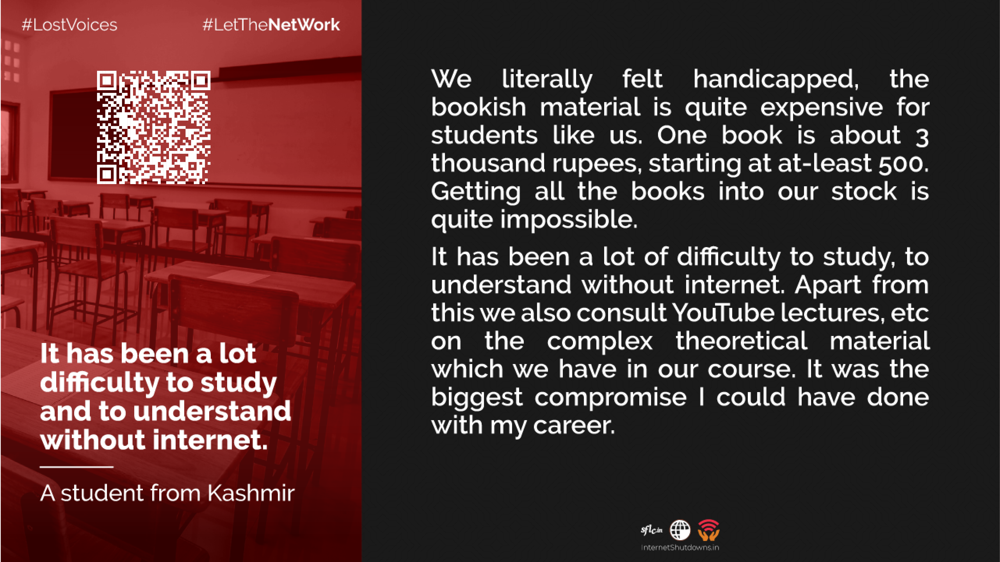

Let The Net Work:Internet Shutdowns in India 2022
© Copyright 2022 SFLC.in. Licensed under Creative Commons BY SA NC 4.0
Typeset in Pagedjs
Published by: SFLC.in
Printed by: SFLC.in
K9, 2nd Floor, Birbal Road,
Jangpura Extension,
New Delhi – 14,
India.
Email: mail@sflc.in
Website: https://www.sflc.in
Twitter: @SFLCin
Chapter 1: The Internet Shutdowns Tracker.......................8
Chapter 2: Impact Assessment of Internet Shutdowns.......15
Chapter 3: Legal Framework for Internet Shutdowns........22
Chapter 4: Recent Legal and Policy Developments...........31
Chapter 5: Stakeholder Mapping.......................................37
Chapter 6: Way Forward and Conclusion...........................43
ANNEXURE 1...................................................................47
It is an irony that the country which prides itself on its digital initiatives like UPI cotinues to record the maxinum number of Internet Shutdowns acrosss the world. Internet shutdowns have varied impacts on different segments of the population, Much of the impact of Internet shutdowns goes undocumented. The year 2022 saw India take over the presidency of G20 and at the same time saw the highest number of shutdowns for another year in row. The reasons for shutting down the Internet 75 times this year have ranged from prevention of cheating in exams, countering communal tensions to terrorism. The year also saw the attempt at duplication of a colonial era legislation in the form of the Indian Telecommunication Bill 2022. The bill which does not improve the legal framework for internet shutdowns in the country. There is a complete absence of state maintained documentation of Internet shutdowns leading to the onus falling on civil society organisations like SFLC.in to maintain the count. On a positive side, this year has also seen significant legal challenges and policy developments in the area which are expected to change the jurisprudence of Internet Shutdowns in the country. The Internet Shutdowns Tracker has been the key resource for this report, being the only real time tracker that maintains documentation around Internet Shutdowns in the country. The report has emerged from the year around documentation that the tracker maintains. This report aims to educate its audience on the numbers around Internet Shutdowns, the impact of these shutdowns, the laws and policies governing shutdowns, the major developments around shutdowns in 2022 and to provide recommendations for better governance in this area. This Report is a continuous part of SFLC.in’s efforts against arbitrary internet shutdowns. In addition to understanding the law which sanctions internet shutdowns and the issues which arise within it, the Report also attempts to provide information that brings forth the intensity, extent, and impact of internet shutdowns. The report has been designed to serve as a resource for lawmakers and citizens alike, with the objective of shedding some light into the issue of internet shutdowns in India.
The advent of the democratizing and decentralized structure of the internet birthed the creation of a parallel social structure, which has merged over time with the real word. The extension of human activities in the digital realm, and the increasing expansion of the virtual world, has blurred the lines between the two worlds, with simultaneous human existence in both. We use the internet, for example, to hail a taxi virtually and pay for it online, to commute in the real world. We use our virtual identities to buy and hold digital assets, with which we purchase tangible products. The internet has affected how we exercise our rights in a participatory democracy. The “modern public square” that is the internet, has empowered an individual “to become a town crier with a voice that resonates farther than it could from any soapbox” Packingham v North Carolina, 582 U.S.___(2017) . As the ultimate currency to access essential and non-essential services, and to exercise constitutionally protected fundamental rights, arbitrary disruptions in accessing the internet hamper access to said services and rights. Therefore, strict scrutiny of the exercise of Executive powers to block internet access is a sine qua non to due process in any democratic society. Despite this, in 2021, with 101 shutdowns, India ranked first in the list of countries with the highest number of internet shutdowns in the world.
This Report is a part of SFLC.in’s continuous efforts against arbitrary internet shutdowns. It aims to serve as a resource which allows a comprehensive understanding of internet shutdowns in India, and the impact they have on individual rights and the society. It also studies and scrutinizes the legal framework related to internet shutdowns. The Report has been designed to serve as a resource for citizens and lawmakers alike, to both bring to the fore the harsh truth around internet shutdowns, and to provide a springboard to better protect rights on the internet.
It is essential to first grasp the extent and frequency of internet shutdowns before stressing on the urgency to take corrective steps. This is done in Chapter 1 of this Report, using data from SFLC.in’s Internet Shutdowns Tracker, which has been following every single internet shutdown in India since 2012. In the interest of complete transparency and authenticity, the methodology behind maintaining the tracker is also laid out. The Chapter also lays out an analysis which enables a fuller understanding of internet shutdowns in India-the reasons cited by the Government for imposing internet shutdowns, nature of shutdowns (preventive or reactive), nature of services suspended, state-wise distribution of shutdowns and duration of shutdowns.
The impact of internet shutdowns, albeit drastic, is fragmented and poorly recorded. In Chapter 2, the adverse impacts of shutdowns are highlighted, statistically where possible, with particular focus on human rights, the economy, education, and healthcare. As aspects in which minority and underprivileged groups feel the impact most significantly, these areas were isolated and studied. Chapter 3 of the Report identifies the legal framework which enables internet shutdowns. The high ranking of India on the shutdowns index, and compounding abuse of rights in this regard over the years, is an indicator of statutory defects and weak accountability measures. In Chapter 4, the Report studies contemporary policy and legal developments in India on internet shutdowns, with the intent of developing a foresight into India’s approach towards them.
Chapter 5 of the Report is a stakeholder analysis to understand the role of and impact on each element of the current social order in the context of internet shutdowns. The relationship between each of these elements is crucial in understanding the distribution of power and rights, which in turn enables a clearer understanding of the points at which changes can be brought about to mitigate the problems which arise out of arbitrary shutdowns. In essence, it sheds a light on the role which each stakeholder can play to prevent the abuse of rights, and allows us to get a clearer picture of standards of accountability applicable to each stakeholder. The map also provides insight into how SFLC.in specifically interacts with each element.
As a civil society organization, one of the stakeholders mentioned in Chapter 5, SFLC.in bears an important responsibility of ensuring that constitutionally guaranteed rights are protected.
The Report in Chapter 6 concludes with an assessment of the different resources above, reading them as whole to locate key areas of development which can restrict the arbitrary exercise of powers and ensure continued access to the internet. SFLC.in remains committed in its efforts to disable the weaponization of ‘access to internet’, and to ensure unfettered and lawful access for all.
SFLC.in maintains an Internet Shutdowns Tracker (IST) which can be accessed at https://internetshutdowns.in/. This flagship project of the organization is a repository of every single traceable internet shutdown imposed in India since 2012. This real time record, the only database of its kind in India, yields data essential for an analysis of the incursion of right to access the internet, and the right to freedom of speech and expression on the internet, in India.
For the purposes of the tracker, we define an internet shutdown as “a Government imposed disablement of access to the internet as a whole, in a particular locality, or localities, for any duration of time”. The Internet Shutdowns Tracker has recorded a total of 690 shutdowns in India since 2012. The first recorded shutdown was imposed in the then State of Jammu and Kashmir on January 26, 2012 (‘Republic Day’).
As mentioned above, the Internet Shutdowns Tracker is a real time tracker.The information is sourced through the news, local and national media, and publicly available internet shutdown orders issued by the respective state governments. There is also a citizen reporting mechanism available at the Tracker website which can be used by the citizens to report any instances of Internet shutdowns in the country. SFLC.in also receives reports from citizens on our various social media handles.
All reports received are put through a rigorous cross-verification process by the team to verify the authenticity of the report. Apart from public engagement for this, routine applications under the Right to Information Act, 2005 (hereinafter "RTI Act"; “RTI applications”) are filed with the order-issuing authority to obtain details about the shutdown. The Act allows citizens to seek information from government departments, which the department must respond to within thirty days The Right to Information, 2005, s. 6 .
SFLC.in files applications for each shutdown where an order is not publicly available. Further, blanket applications are also filed with the central and state governments to furnish all orders issued between certain periods of time (say, January 20xx to March 20xx). This is done to ensure that shutdowns which were not reported in the news, or about which we have received no intimation, are also documented. This also acts as a step of verification for the information already available on the Tracker.
It is pertinent to note that, SFLC.in counts each order suspending internet as a separate internet shutdown. This metric of measurement is important, since in a few instances where consecutive shutdowns are imposed, they are reported in the news as one shutdown. The metric put in place by SFLC.in ensure that such inaccuracy is avoided. Furthermore, there are instances when news reports or citizen reports of internet shutdowns are ambiguous in the duration for which the shutdown has been imposed. In these situations, changes are retrospectively made to the Tracker upon verification. Retrospective adjustment to the Tracker is also made when copies of the orders are released ex post the shutdown.
Using the data recorded on our Tracker, the following graphical representations were prepared to provide an overview of the state of shutdowns in India. SFLC.in has also added an annexure to this Report (Annexure 1), which presents all applications filed under the Right to Information Act, 2005, requesting details about the internet shutdowns imposed by various authorities. Access to this information is crucial in the assessment of the legitimacy of the internet shutdown imposed, and to identify procedural and substantive issues in the process of imposing internet shutdowns. It is recommended that the data below be read with the information available in Annexure 1 of the Report to materialize a wholesome understanding of the status quo of internet shutdowns in India.
Later in the Report, in Chapter 3 , in the context of the data presented above and the information provided in Annexure 1, we have studied the issues we which arise in documentation of internet shutdowns in India.


In order to study the impact of internet shutdowns on citizens, SFLC.in also maintains empirical records in the form of testimonials by those who have been affected by them. Through this project, called Lost Voices, we have come across stories, particularly from the Kashmir region which suffered the harshest of internet shutdowns in India (for 522 consecutive days). Inevitably, the loss of livelihood and obstructions in pursuing educational or professional opportunities were a fallout they suffered. More importantly, the shutdowns restricted access to health and access to other essential services (such as financial and banking services).
SFLC.in, in a coalition with non-profit organisations and civil society groups, wrote to the Government appealing the restoration of high speed internet in the Union Territory of Jammu and Kashmir on August 12, 2022. Subsequently, SFLC.in also wrote to Home Department of the Union Territory of Jammu and Kashmir, imploring the urgent restoration of internet services in two parts of the region during the second wave of the deadly COVID-19 pandemic. Access to internet during the pandemic was essential, and the near-absolute dependence on it has been well documented. More importantly, community aid was made easier during this period due to the internet.
The expansion of the society and its structures into the digital realm has warranted a protection of rights in this new dimension as well. This has been judicially recognized in Faheema Shirin R.K. v The State of Kerala 2019 SCC OnLine Ker 2976 and Anuradha Bhasin v Union of India AIR 2020 SC 1308, by the Honourable High Court of Kerala, and the Supreme Court of India has recognised that the exercise of certain fundamental rights is contingent on access to internet. More specifically, in Faheema Shirin, in which SFLC.in was impleaded as a party, it was held that restricting access to internet violated students’ rights to access information under Article 19(1)(a) of the Constitution, and their rights to education and privacy under Article 19(1)(g).
Arbitrary and disproportionate internet shutdowns violate these, and several other rights. In this section of the Report, the impact of internet shutdowns is studied, statistically in as far as possible, to highlight the scarring effect on the economy, healthcare, and education.
Internet shutdowns come at an aggressive cost to the economy and economic stability. According to Top10VP report for the year 2022, India lost $174.6 million due to internet shutdowns https://www.top10vpn.com/research/cost-of-internet-shutdowns/ . Long term shutdowns have drastic impacts on the livelihood of people and directly contribute to loss of employment. The region of Kashmir, which lost access to internet for over 18 months, is the worst hit state in India, in terms of economic impact. According to a report by Kashmir Chamber of Commerce and Industries, businesses have suffered losses worth Rupees 40,000 crore from 05 August 2019 to July 2020 Mukeet Akmali, KCCI puts estimated losses to Kashmir Economy at Rs. 40,000 cr., Greater Kashmir, 17 July 2022. Accessed at:https://www.greaterkashmir.com/business/kcci-puts-estimated-losses-kashmir-economy-at-rs-40000-cr . Till November 2020, at least 5000 salesmen in tourism and mobile services were not paid salaries for the months of August, September and OctoberIbid.. Further, 4.96 lakh people lost their jobs. Aid, Bashir Wani, 18,000 crore rupees, nearly 5 lakh jobs lost as Kashmir reels under internet suspension, Citizen Matters, 3 January 2020. Accessed at: https://citizenmatters.in/kashmir-business-impact-internet-suspended-post-article-370-15069 The President of the Kashmir Chamber of Commerce and Industries had stated that “The internet shutdown added to losses due to disruption in online shopping and transactions after August 5th. Online business has taken a severe blow.” Ibid. It was also observed that startups, the telecommunications sector (viz-a-viz internet service providers) and courier services are among the worst hit businesses in Kashmir Ibid. .
In a report prepared by SFLC.in, titled Living in Digital Darkness- A Handbook on Internet Shutdowns in India Living in Digital Darkness: A Handbook on Internet Shutdowns in India, SFLC.in, May 2018, page 66. Accessed at: https://sflc.in/sites/default/files/reports/Living%20in%20Digital%20Darkness%20-%20A%20Handbook%20on%20Internet%20Shutdowns%20in%20India%2C%20May%202018%20-%20by%20SFLCin.pdf , it was observed that internet shutdowns not only affect big traders, E-commerce, or big companies but an Internet blackout tends to equally impact even the smallest business which has any form of Internet dependence. We were able to speak to an operator at a service center from Mutnur village of Adilabad district who said, “Various business areas suffered when there was no internet for 30-45 days in our region. Our work includes filling of online applications, generating certificates like birth certificate, OBC certificate etc. Since we couldn’t do any bank transactions, our customers also faced a lot of inconveniences.” Ibid The impact on gig workers (food app delivery partners, drivers who are a part of cab aggregator services), who rely on the internet entirely to perform their services for their wages, suffer severely. Shutdowns prevent them from being able to render their services entirely.
The Indian Council for Research on International Economic Relations, in its report, observed that with increased digitization of health records and facilities, an internet shutdown impacts healthcare services as well. Many doctors rely on the internet for consultation with their peers, and patients also use the internet to consult doctors. These activities are normally hit due to internet shutdowns Rajat Kathuria, Mansi Kedia, Gangesh Varma, Kaushambi Bhagchi, Richa Sekhani, The Anatomy of an Internet Blackout: Measuring the Economic Impact of Internet Shutdowns in India, Indian Council for Research on International Economic Relations, April 2018, page 38. Accessed at: https://icrier.org/pdf/Anatomy_of_an_Internet_Blackout.pdf . In SFLC.in’s report Supra Note 13 at page 68 , we were able to identify database access difficulties faced by a doctor in Manipur during an internet shutdown. Apart from being able to access their server, issues were also faced in making payments, tracking shipments of medical supplies, and engage in other essential medi-care activities essential for delivering healthcare services seamlessly Ibid .
Many government-provided health schemes for poor and vulnerable are affected by internet shutdowns, thereby, affecting access to healthcare. In early 2020 it was reported that many individuals who are beneficiaries of a government health scheme (Ayushman Bharat, a health insurance scheme for economically backward individuals) were not able to access healthcare as the hospitals were unable to deal with these cases due to internet blockade in Kashmir. Doctors stated that they were unable to process Ayushman Bharat cases for 25 days consecutively, after which they resorted to offline processes, which caused issues of efficiency and hampered delivery of services to beneficiaries. Access to free healthcare which was guaranteed under the scheme was obstructed due to prolonged internet shutdowns Athar Parvaiz, Kashmir internet blackouts hinder health services, contact tracing, Reuters, 20 May 2020.Accessed at: https://www.reuters.com/article/us-health-coronavirus-india-tech-trfn-idUSKBN22W052 .

Internet shutdowns have a severe impact on education. The importance of access to internet for the modern education sector became obvious with the online delivery of classes and administration of examinations during the COVID-19 pandemic across the world. It must be noted that over 96.33 percent of internet users in India are mobile internet users Press release number 43/2022, Telecom Regulatory Authority of India, 19 July 2022, access at: https://www.trai.gov.in/sites/default/files/PR_No.43of2022_0.pdf and over 75 percent internet shutdowns affect mobile internet services Internet Shutdowns Tracker, SFLC.in, access at: https://internetshutdowns.in/ . This worsens the digital divide that already exists in the country.
With respect to long term internet shutdowns, it was observed that some students dropped out of schools or missed an entire year of schooling. In Kashmir it was reported that, due to low internet speed and connectivity issues the syllabus for the academic year had to be reduced by 40 percent 40% syllabus relaxation in class 10-12 exams, Greater Kashmir, 31 October 2020. Accessed on: https://www.greaterkashmir.com/news/front-page-2/40-syllabus-relaxation-in-class-10-12-exams/ . Parents of children reported that students have been discouraged to attend the classes due to low speed. It also caused emotional and mental health issues to many students who were not able to access education Rifat Fareed, Kashmir lockdowns, slow internet rob students of their education, DW, 17 March 2021. Accessed on: https://www.dw.com/en/kashmir-lockdowns-hurt-students/a-56904725 . In some cases, students were unable to appear in important government held examinations for entrance into colleges for higher education and for government jobs Supra Note 36 and Lost Voices. Also see: Fateh Veer Singh and Rishab Jain, J& K: Students’ NEET preparation suffers amidst Sluggish Internet Services, The Wire, 11 February 2020. Accessed at: https://thewire.in/rights/kashmir-students-neet-internet . Or in some cases people travelled to different cities in order to appear in exams or even to obtain study material. Peerzada Ashiq, We’re in the stone age, say Kashmir students on Internet shut down, The Hindu, 25 January 2020. Accessed at: https://www.thehindu.com/news/national/were-in-the-stone-age-say-kashmir-students-on-internet-shut-down/article30653509.ece
A petition was filed in the Supreme Court of India [ Foundation for Media Professionals v. UT of J&K and anr. ] (D. No. 10817 of 2020) stating the challenges students and schools were facing at the start of the pandemic. It was contended in this petition that an internet shutdown during a pandemic, particularly, is a violation of right to education of all the children living in Kashmir. Ibid, para 5
The Court’s dismissal of the petition was premised on the argument that stat security would supersede education, especially where terrorism is concerned. This was a decision arrived at after consideration offered by the Court to the desirability and convenience of access to internet in light of “a worldwide pandemic and a national lockdown”. Ibid, paras 12-15
There are recorded incidents of students having had to appear for exams physically despite the pandemic. Students of Kurukshetra University, a renowned educational institution in the State of Haryana, had exams scheduled as a routine part of their curriculum during the pandemic. This schedule coincided with the “farmers protests’” in the State, in reaction to which shutdown orders were put in place from September 7-9, 2021. Subsequently, a statement was released by the Controller of Examinations of the University that students would either have to arrange broadband within a day, or write exams physically. SFLC.in wrote to the University administration, highlighting the arbitrariness of the instructions in the statement, and implored the postponement of the examinations, or extension of an alternative to the students. This case study is crucial in understanding the tangible impact, in this instance of health and safety of students, which were a direct fallout of a reactive internet shutdown Letter to Vice Chancellor Kurukshetra University to protest against physical examinations due to Internet Suspension, SFLC.in, 9 September 2021. Accessed at: https://sflc.in/letter-kurukshetra-university-against-students-being-forced-write-physical-exams-due-internet .
In India, the power to impose an internet shutdown, lies both with the Central and State governments. This is due to the federal structure adopted by the constitution, where public order, law and order and police are state subjects. Constitution of India, 1951, Article 246 read with 7th Schedule. Therefore, it has also been observed, that political context within a state plays a crucial role in internet shutdown decisions in the country. Kris Ruijgrok (2021): The authoritarian practice of issuing internet shutdowns in India: the Bharatiya Janata Party’s direct and indirect responsibility, Democratization, DOI: 10.1080/13510347.2021.1993826. Accessed at: https://www.tandfonline.com/doi/full/10.1080/13510347.2021.1993826 There are two laws which enable the state government to impose an internet shutdown. First, Section 144 of the Criminal Procedure Code. Criminal Procedure Code 1973, Section 144. Second, the Temporary Suspension of Telecom Services (Public Emergency or Public Safety) Rules, 2017 passed by the central government under Section 7 of the Indian Telegraph Act. Temporary Suspension of Telecom Services (Public Emergency or Public Safety) Rules, 2017; Indian Telegraph Act, 1885, Section 7(2)(5). It gives rules making power to the central government with respect to conditions and restrictions subject to which any telegraph line, appliance of apparatus for telegraphic communication shall be established, maintained, worked, repaired, transferred, shifted, withdrawn or disconnected. Pertinently, Section 144 has been sparingly used since the notification the Rules in August 2017.
Section 144 of the Criminal Procedure Code gives power to a District Magistrate to “direct any person to abstain from a certain act or to take certain order with respect to certain property in his possession or under his management.” The grounds on which S. 144 can be invoked are: a) sufficient ground, b) requirement for immediate prevention, and c) speedy remedy to prevent a likely obstruction, annoyance or injury to any person lawfully employed, or danger to human life, health or safety, or a disturbance of the public tranquility, or a riot, or an affray. This order has to be in written form and state material circumstances due to which the power is being invoked.
The constitutional validity of passing an internet shutdown order under section 144 was upheld by the Supreme Court of India in 2016 in matter of Gaurav Sureshbhai Vyas v. State of Gujarat Gaurav Sureshbhai Vyas v State of Gujarat 2016 SCC OnLine SC 1866 , which upheld the judgement given by the Gujarat High Court in 2015 Gaurav Sureshbhai Vyas v State of Gujarat 2015 SCC OnLine Guj 6491 . In 2020, the Supreme Court of India in the matter of Anuradha Bhasin v. Union of India read into certain procedural safeguards in the language of section 144. It was observed by the court that the order must be published and available in public domain Anuradha Bhasin v Union of India, para 108 . Also, an indefinite suspension of internet services is not permissible. Anuradha Bhasin v Union of India, para 110 The court, further, observed that the principle of proportionality is applicable on these orders and the authority must adopt the least restrictive measure. Which means that the issuing authority has to balance the security interest of the state and individuals rights.
The court observed that “in a situation where the fundamental rights of the citizens are being curtailed, the same cannot be done through an arbitrary exercise of power; rather it should be based on objective facts. The preventive/remedial measures under Section 144, Cr.P.C. should be based on the type of exigency, extent of territoriality, nature of restriction and the duration of the same.” Anuradha Bhasin v Union of India, para 133
However precedent holds Sharat Babu Digumarti v Government of NCT Delhi, (2017) 2 SCC 18 that where a special law exists, the application of the general law is precluded. Accordingly, the application of Section 144 for the purposes of imposing internet shutdowns becomes questionable.
The Temporary Suspension of Telecommunication Services (Public Emergency or Public Safety) Rules, 2017, issued under section 7 of the Indian Telegraph Act, 1885 prescribes the procedure for suspension of telecommunication services.
According to these Rules the power to impose an internet shutdown is with the executive branch of the union and state. As per sub rule 2(6), an internet shutdown shall be imposed in accordance with Section 5(2) of the Indian Telegraph Act. Section 5(2) states that an internet shutdown can be imposed only in case of a “public emergency” or in the interest of “public safety”. However, these terms (public emergency and public safety) have not been defined anywhere in the parent act . As a result of this, very often internet shutdowns are imposed in situations which do not satisfy the threshold of a public emergency or public safety as laid down by judicial precedents. People’s Union For Civil Liberties v. Union of India (1997) 1 SCC 301, para 27-28; Dr. Ram Manohar Lohia v. State of Bihar and Ors (1966) 1 SCR 709, para 55.
For example, Rajasthan, Arunachal Pradesh and West Bengal governments have imposed internet shutdowns to prevent cheating in exams. Where the Rajasthan government imposed 3 shutdowns within a month in 2021. We have also recorded multiple instances of internet shutdowns being imposed by state governments to prevent law and order situations, like spread of fake news or peaceful protests. For example an internet shutdown was imposed on 8 September 2018 in Pune, Maharashtra, during Maratha Quota reservation protests, Maratha Quota Stir: Internet Services Suspended in Pune District, The Wire, 9 August 2018. Accessed at: https://thewire.in/caste/maratha-quota-stir-internet-services-suspended-in-pune-district; Internet was also shut down in Mumbai in July. See: Maratha Quota stir: Internet services suspended in Navi Mumbai, 26 June 2018. Accessed at: https://timesofindia.indiatimes.com/city/mumbai/maratha-quota-stir-internet-services-suspended-in-navi-mumbai/articleshow/65144524.cms or during Gujjar Reservation Quota agitation in Rajasthan in February 2019. Gujjar stir in Rajasthan enters 5th day, trains affected, Internet snapped, News Nation, 12 February 2019. Accessed at: https://www.newsnation.in/india-news/gujjar-community-stir-agitation-rajasthan-sawai-madhopur-trains-affected-internet-suspended-gurjar-kirori-singh-bainsla-chief-minister-ashok-gehlot-article-213872.html Such instances violate fundamental rights of freedom of speech, press and peaceful assembly.
Further in the landmark judgement of Anuradha Bhasin v. Union of India the court observed that “we think it necessary to reiterate that complete broad suspension of telecom services, be it the Internet or otherwise, being a drastic measure, must be considered by the State only if ‘necessary’ and ‘unavoidable ’.” Anuradha Bhasin v Union of India, para 99
However, we have observed this condition being violated by state governments at multiple instances. For example, Internet shutdowns were imposed by Rajasthan state to prevent cheating in exams three times in a month despite submitting before the High Court of Rajasthan that it shall not impose internet shutdown to prevent cheating in exams. Dhirendra Singh Rajpourohit v Government of Rajasthan (D.B. Civil Writ No. 10304/2018) In the year 2022, state of West Bengal and Assam imposed internet shutdowns to prevent cheating in exams at multiple occasions. https://www.ndtv.com/india-news/assam-recuitment-exam-4-hour-internet-shutdown-in-assam-reason-to-prevent-cheating-in-an-exam-3272595; https://indianexpress.com/article/cities/kolkata/amid-tight-security-internet-shutdown-tet-after-5-years-8318086/; https://www.medianama.com/2022/03/223-west-bengal-internet-shutdown-order-problematic/
In addition to that, the rules provide for formation of a review committee at the central and state level. The task of this committee is only to determine whether an internet shutdown was imposed according to the law. Further, the Review Committee is composed of members from the executive branch. Suspension of Telecom Services/ Internet and Its Impact, 26th Report, Sanding Committee on Communications and Information Technology, December 2021. Also see: IT Standing Committee’ s Report on Internet Shutdowns, SFLC, 8 December 2021 at page 14. Accessed at: https://sflc.in/it-standing-committees-report-internet-shutdowns This means that the committee is not independent and lacks diversity in its composition. In addition, it is a violation of principles of natural justice. Such a mechanism of review has resulted in no accountability and transparency in relation to imposition of internet shutdowns. Further, we sparingly see the minutes of the meetings as Government often claim exemptions under Section 8A or 24(4) of the RTI Act. However, from the reports that we have seen, the orders are usually copy pasted and do not reflect application of mind.
In a recent report by the parliamentary Standing Committee on Communications and Information Technology, it was submitted by the government of India that there exists no official centralized record of the states which have constituted functioning review committees or not. IT Standing Committee’ s Report on Internet Shutdowns, SFLC, 8 December 2021 at page 14. Accessed at: https://sflc.in/it-standing-committees-report-internet-shutdowns
Moreover, in the case of Anuradha Bhasin v. Union of India , it was held by the Supreme Court of India that an internet shutdown order passed under the Rules must be published and made publicly available. As an internet shutdown is a restriction on fundamental rights guaranteed under Article 19(1)(a) and 19(1)(g) (freedom of speech and expression; and freedom to trade and profession). Therefore, it will be a violation of principles of natural justice if an internet shutdown order is not publicly available for citizens to challenge the suspension. Anuradha Bhasin v Union of India, para 96. However, it has been observed by us that very often states fail to make internet shutdown orders publicly available. These are then obtained through RTI applications. This results in losing out on time and the ability to challenge an internet shutdown while it is in place and seek restoration of internet.
SFLC.in has also written to state governments on various occasions to restore internet services while a shutdown is in place. However, we have not received a response yet. SFLC.in wrote to Rajasthan government against imposing arbitrary internet shutdowns, SFLC.in, 25 October 2021. Accessed at: https://sflc.in/sflcin-wrote-rajasthan-government-against-imposing-arbitary-internet-shutdowns; Letter sent to Rajasthan Government against imposing a internet shutdown to prevent cheating in exams, SFLC, 26 September 2021. Accessed at: https://sflc.in/sflcin-wrote-rajasthan-government-against-imposing-internet-shutdowns-prevent-cheating-exams; Our letter to J&K administration against imposing internet shutdowns during the second wave of COVID 19 Pandemic, SFLC.in, 10 March 2021. Accessed at: https://sflc.in/our-letter-jammu-and-kashmir-adminstration-against-imposing-shutdowns-during-deadly-second-wave; Representation sent to govt of Arunachal Pradesh regarding suspension of Internet Services, SFLC.in, 2 November 2020. Accessed at: https://sflc.in/representation-sent-arunchal-pradesh-government-suspension-internet-services-15-districts-curb; Collective statement to urge the Government of Jammu and Kashmir to restore High- Speed Internet, SFLC, 13 August 2020. Accessed at: https://sflc.in/collective-statement-urge-government-jammu-and-kashmir-restore-highspeed-internet As mentioned in a later part of this report, we also challenged two internet shutdowns before the respective High Courts. SFLC.in assists in challenging the Haryana Shutdown order, SFLC.in, 12 February 2021. Accessed at: https://sflc.in/sflcin-assists-challenging-haryana-shutdown-order; Division Bench of Calcutta High Court to have a special sitting tomorrow to look into the Hoogli internet shutdown, SFLC.in, 15 May 2020. Accessed at: https://sflc.in/sflcin-moves-calcutta-high-court-challenging-internet-shutdown-hoogli-district
The Department of Telecommunications introduced the Draft Telecommunication Bill, 2022 (hereinafter “the Draft Bill”) on 21st September, 2022. The Draft Telecommunication Bill, 2022. The government intends to replace the Indian Telegraph Act, 1885 with the Bill. As noted above, currently the governing legislation for Internet Shutdowns in India is the Indian Telegraph Act, 1885 read with the Rules. Clause 24(1)(a) of the Draft Bill prescribes the conditions and procedure for suspension of telecommunication services. The clause borrows heavily from its predecessor. It continues to use the terms public emergency and public safety without putting any definitional limits on them. Pertinently, clause 53 of the Draft Bill states that All rules, guidelines or administrative orders, made or purported to have been made under the Indian Telegraph Act, 1885 shall continue to remain in force unless they are superseded by rules made under the Draft Bill. Therefore, the Telecom Suspension Rules will continue to be force till new rules are introduced by the government.
Several challenges arise while tracking and documenting internet shutdowns due to lapses by the executing agencies in following the prescribed procedure. These challenges are not only limited to recording a shutdown. Documentation of adverse impact of internet shutdowns on freedom of speech and press, freedom of trade, education and health are significantly harder as communication becomes difficult during such outages. SFLC.in attempts to document the shutdowns and impact through the tracker and the Lost Voices project. However, we would like to highlight the challenges faced, especially while filing applications under the RTI Act.
Many a times orders are not published before an internet shutdown is imposed. In the month of May a 7 day long internet shutdown was imposed with publishing a notification. These suspensions are also extended in terms of duration and geographical extent without notifications, for instance during Bihar internet suspension the extent of shutdown was increased from 12 districts to 20 without issuing any notification. Resultantly, difficulty in keeping a track of these shutdowns and challenging them is increased significantly.
Applications under the Right to Information Act, 2005 are regularly filed to obtain orders directing suspension of the internet, formation of Review Committee under the Telecom Suspension Rules and minutes of meeting of the Review Committees. Two significant challenges which are faced while documenting are:
State governments claim blanket exemption under section 8(1)(a) of the RTI Act and refuse to provide all the suspension orders. Section 8 of the Act allows Public Information Officer to deny such information which will prejudicially affect the sovereignty and integrity of India, the security, strategic, scientific or economic interests of the State, relation with foreign State or lead to incitement of an offence. So far from the responses received Jharkhand and Assam state governments have sought this exemption under section 8(1)(a) to refuse providing orders.
Additionally, state governments have exempted certain branches of their Home Departments under section 24 of the Right to Information Act, 2005. Section 24 of the Act provides the State Government may exempt certain organisations from being under the ambit of the Act through a notification issued in the Official Gazette. Pursuant to which the Home Departments of Gujarat, Chhattisgarh, have denied providing suspension orders as the branch issuing the suspension order is exempted from the Act.
This gives rise to a conflict between the law laid down by the Supreme Court of India in Anuradha Bhasin and Right to Information Act, 2005. Section 22 of the Right to Information Act, 2005 gives an over-riding effect to the Act. However, such blanket exemptions lead to violation of Principles of Natural Justice. As observed by the Supreme Court, access to internet is a fundamental right as far as it acts as a medium to access fundamental rights such as freedom of speech and expression and freedom of trade. Thus, non publication of these orders and the denial to provide them under the RTI Act is a violation of Principle of Natural Justice.
The table in Annexure 1 provides the number of applications that were filed and the responses received paints the complete picture to understand the issues highlighted above.
In backdrop of issues with the existing legal framework and the challenges for documentation arising from the same, certain pertinent developments in the policy realm of internet shutdowns are highlighted here. These developments are key for understanding how the current policies with respect to internet shutdowns in India will be shaped and where we are headed.
India, along with the countries of the United Kingdom, Australia, Canada, France, Germany, Italy, Japan, the Republic of Korea, South Africa, the United States of America and the European Union signed the 2021 G7 ‘open societies’ joint statement, which encourages values such as “freedom of expression, both online and offline, as a freedom that safeguards democracy and helps people live free from fear and oppression.” The joint statement further read: “We are at a critical juncture, facing threats to freedom and democracy from rising authoritarianism, electoral interference, corruption, economic coercion, manipulation of information, including disinformation, online harms and cyber attacks, politically motivated internet shutdowns, human rights violations and abuses, terrorism and violent extremism.” The “open societies” statement also affirmed “human rights for all, both online and offline, as set out in the Universal Declaration of Human Rights and other human rights instruments, and opposition to any form of discrimination, so that everyone can participate fully and equally in society”.
“Ending Internet Shutdowns: a path forward” presented in the 47th Session of human rights council in 2021- The report was presented in the 47th session of the Human Right Council. The report is a follow up of the report presented before the council in the 46th session. It is a study of recent trends and the impact of Internet shutdowns in relation to peaceful protests, and makes recommendations to address this global phenomenon.
Suspension of Telecom Services/ Internet and Its Impact- Report by The Standing Committee on Communications and Information Technology. The Standing Committee on Communications and Information Technology (hereinafter “the Committee”) headed by Dr. Shahi Tharoor, undertook a detailed review of the governing legal framework, procedure adopted by the states, safeguards to protect from misuse and other ancillary issues.
A report was issued by Office of the United Nations High Commissioner for Human Rights titled “Internet shutdowns: trends, causes, legal implications and impacts on a range of human rights”. The report analyses the impact of Internet Shutdowns on human rights. It further highlights measures for ending internet shutdowns and minimizing the impact. Internet shutdowns: trends, causes, legal implications and impacts on a range of human rights, Office of the United Nations High Commissioner for Human Rights, May 13, 2022. Access at: https://documents-dds-ny.un.org/doc/UNDOC/GEN/G22/341/55/PDF/G2234155.pdf?OpenElement
Draft Indian Telecommunication Bill, 2022-
The Draft Bill was introduced by the Department of Telecommunication and intends to replace the Indian Telegraph Act, 1885. Clause 24(2) b) of the Draft Act states that on the occurrence of any public emergency or in the interest of the public safety, the Central Government or a State Government or any officer specially authorized may, if satisfied that it is necessary or expedient to do so, in the interest of the sovereignty, integrity or security of India, friendly relations with foreign states, public order, or preventing incitement to an offence, for reasons to be recorded in writing, by order- direct that communications to or from any person, relating to any particular subject, transmitted or received by any telecommunication network can be suspended. This would allow for internet shutdowns as well.
Kabir Choudhary vs. State of Haryana and Anr.; Punjab and Haryana HC
The Writ Petition was filed challenging the imposition of internet shutdowns in various districts in the state of Haryana. On 27.01.2021, internet was initially suspended in the districts of Jhajjhar, Sonipat and Palwal. The initial shutdown was to last till 5 pm on 27.02.2021 but it was subsequently extended till 5 pm on 28.01.2021. Subsequently, the internet shutdown was arbitrarily extended to a total of 17 districts. The shutdown was completely lifted on 06.02.2021, after a period of more than 10 days. The Petition prayed for quashing of the order imposing the internet shutdown. It further prayed for constituting a committee of government officials, representatives from the civil society, economists and independent policy professionals to study the economic impact of the internet shutdown that was imposed in this case. The case was withdrawn by the Petitioner as it was the opinion of the Hon’ble Court that the matter had become infructuous. Litigation Tracker, SFLC.in. Access at: https://sflc.in/litigation-tracker.
Ashlesh Birader vs. State of West Bengal; Calcutta HC
The writ petition was filed by Ashlesh Birader challenging the suspension of the internet for preventing cheating in exams by the West Bengal Government. The order, passed under section 144 of the Criminal Procedure Code, directed suspension of internet in various districts of West Bengal over 11 days between 11 am to 3:15 pm. The petition sought a stay on the order for being in violation of the law laid down in the Anuradha Bhasin Judgement. It also prayed for publishing the findings of the review committee formed as per telecommunication suspension Rules. The High Court granted the stay on the order suspending internet services. The court disposed of the petition while giving a direction to the state to follow law laid down. Calcutta HC Stays Internet Shutdown order issued by West Bengal Government, Internet Freedom Foundation. Access at: https://internetfreedom.in/calcutta-hc-stays-internet-shutdown-issued-by-west-bengal-government/; https://www.medianama.com/2022/07/223-calcutta-hc-internet-shutdown-iff-petition-follow-law-remarks/
Udaipur Chamber of Commerce and Industry and ors. vs. State of Rajasthan; Rajasthan HC
UCCI and Hotel Association Udaipur filed a petition before the Rajasthan High Court. The petition was filed against frequent arbitrary suspension of internet services which caused irreparable economic damage and violated fundamental rights of the residents of Rajasthan. The petition prayed for a direction to the government to follow the procedure prescribed in the Telecom Suspension Rules and Anuradha Bhasin Judgement. The matter has been admitted by the court. Rajasthan HC issued notice in a petition by Industry Bodies against repeated internet suspension in Rajasthan, Internet Freedom Foundation. Access at: https://internetfreedom.in/rajasthan-hc-issued-notice-in-a-petition-by-industry-bodies-against-repeated-internet-suspensions-in-rajasthan/
Software Freedom Law Center, India vs. State of Jharkhand [Diary no. WP (C) No. 3947/2022]; Jharkhand HC
The writ petition was filed by Software Freedom Law Center, India before Jharkhand High Court for the internet shutdowns imposed on 7 February 2022 and 10 June 2022. The shutdowns were imposed without publication of an order by the government. These shutdowns were in conflict with the law laid down by the Supreme Court under Anuradha Bhasin case. The petition prayed for publication of orders and adherence to the directions laid down in Anuradha Bhasin judgement. Litigation Tracker, SFLC.in. Access at: https://sflc.in/litigation-tracker
Software Freedom Law Center, India vs. State of Arunachal Pradesh and Others [WP (C) No. 314 / 2022]
SFLC.in has filed a writ petition under Article 32 of the Constitution before the Supreme Court of India against the States of Arunachal Pradesh, Rajasthan, Gujarat and West Bengal challenging the arbitrary imposition of Internet Shutdowns during examinations. The State of Assam was impleaded in the petition as well. India is the leader in imposing Internet Shutdowns gloablly. The phenomenon of blanket internet bans during examinations to prevent copying has become common in several Indian states. Such bans primarily target mobile internet services. The Court impleaded the Ministry of Communications through its Secretary, Government of India, is impleaded as Respondent No.5 and issued notice only on the Ministry of Communications to put in an affidavit in response indicating whether there is any Standard Protocol with respect to the grievance raised by the petitioner and, if so, to what extent and how said Protocol is adhered to and implemented. Litigation Tracker, SFLC.in. Access at: https://sflc.in/litigation-tracker
Obstruction of access to internet in present times, when internet is the currency to access services and exercise rights, has scathing effects on the entire social order and ecosystem. In order to accurately assess the role which each societal stakeholder which affects, and gets affected in the chain of causality during an internet shutdown, this chapter of the Report conducts a two part mapping exercise. First, the concerned stakeholders are identified with a brief analysis of the role of and impact on each of them when a shutdown is imposed. This is followed by charting the chain of causality when an internet shutdown is ordered, and how SFLC.in interacts with each of them when access to internet is throttled.
Internet shutdowns have overt tangible and intangible impact on citizens and the society. Reference may be made to Chapter 2 of this Report, which elaborates on the kind of fallouts from internet shutdowns suffered by the citizen, and the effect it has on the society and its economy.
By law, the Central and State Governments are authorized to imposed internet shutdowns. The process of exercise of this power has been laid out in this Report in Chapter 3. The Chapter also elaborates on issues such as absence of due process requirements, and weak transparency and accountability measures in the concerned statutes, which concentrate Executive discretion without legal check posts. By virtue of this power, the Governments effectively become arbiters of freedom of speech and expression upon the suspension of internet services. Furthermore, relief against internet shutdowns can, in most cases, only be ex post. There is a greater burden on the Governments to exercise discretion and judiciousness while wielding the power to block communications over the internet.
Courts, as the organ of the State with inherent powers to curb Executive excess, have played an increasingly important role in ensuring accountability of the Executive when internet shutdown orders are issued. Chapter 4 of this Report traces the role of the judiciary as an accessible forum for citizens to press their rights against arbitrary internet shutdowns and their damaging consequences.
To provide a brief insight, it is noted that before the Anuradha Bhasin judgement, the Temporary Suspension of Telecom Services (Public Emergency or Public Safety) Rules, 2017 suffered from a lack of procedural safeguards. The judgement expanded upon the requirements that needed to be fulfilled for a valid internet shutdown. The decision has weighed the right to information of citizens over the suppression of orders by the governments. Furthermore, the Court examined the role of the District Magistrate and laid down restrictions to the orders in addition to keeping them open for judicial review. But most importantly, it read in the principles of necessity, legitimacy, proportionally as well as recourse to judicial review. Furthermore, it was a three judge bench of the Supreme Court of India which ordered for the constitution of a Special Committee to review internet shutdown Foundation of Media Professionals V. Union Territory of Jammu and Kashmir, 2020, 2020 SCC online SC 453 .
The establishment of strong precedents protecting the individual’s right of access to internet against arbitrary shutdowns has provided the first line of defense against rights-abuse. Courts, by their very structure and placement in the Constitution, become the instruments to hold the Government accountable.
Civil Society organisations are responsible to form the first line of resistance against Government inaction and oppressive actions. Human rights organisations, non-governmental organisations, digital rights organisations, and independent activists offer a medium between the State and the citizens. They reach out to the government with policy recommendations and at the same time, make available resources to the citizens about their rights, proactively defend the rights and provide open-source resources on governmental policies. The United Nations Human Rights Office of High Commissioner has observed that civil societies are responsible for networking with other interested organisations in the face of a shutdown, presentation of reports and making it available to the public and insisting the State to justify the shutdown with valid paperwork as well as challenging the shutdowns Internet Shutdowns and Human Rights, United Nations Office of the High Commissioner for Human Rights, https://www.ohchr.org/sites/default/files/Documents/Press/Internet-shutdowns-and-human-rights.pdf (last visited on 17 Nov, 2022) .
As the medium which bears the responsibility of creating awareness among citizens about their rights, and amplifies their concerns, civil societies play the role of the watchdog. Their persistent and unified efforts are key in ensuring accountability of the State in the exercise of its powers.
The information commissions at different levels act as repositories of information, accessible to almost all of the stakeholders above. Information which may not be available in the public domain about internet shutdowns, is made available through applications under the RTI Act. As mentioned in Chapter 1, the RTI procedure has been used by SFLC.in to collect information and maintain vigilance about internet shutdowns. In effect, it helps keep track of the steps taken by governments for protection of one’s freedoms, and to formulate policy recommendations based on the information that is procured.
Access to such information being fundamental to ensuring accountability of the Government, the need for absolute transparency and cooperation from information commissions is fundamental in defending human rights violated through shutdowns.
Internet shutdown orders are issued by the Government to telecommunication companies and internet service providers under the provisions mentioned earlier in this Report. Upon receiving such orders, service providers suspend internet services on their networks. Shutdowns affect these organisations economically, since the orders prohibit the rendering of services to their customers. The United Nations Guiding Principles on Business and Human Rights has been read by UN OHCHR, to put responsibilities on the companies to challenge the shutdowns, provide prompt information to the public and engage due diligence in identification, mitigation and prevention of human rights abuses Guiding Principles on Business and Human Rights, United Nations Office of High Commissioner for Human Rights, https://www.ohchr.org/sites/default/files/documents/publications/guidingprinciplesbusinesshr_en.pdf (last visited on 18 Nov 2022) .
The digital and print media occupy a place for communication, investigation and verification of news, especially in politically affected areas where opaque governance orders are issued. During internet shutdowns, media is disrupted due to non-dissemination of information and prohibitions on distribution of information. In the Bhasin case, the Court recognized that restrictions on communication affects freedom of press and is a violation of freedom of speech and expression. Disruptions in access to the internet inherently affects dissemination of information and encourages distribution of misinformation in absence of verified sources which has become a huge issue in Kashmir. Adil Amin Akhoon, Saliq Parvaiz, How do journalists work under information blockades, Al Jazeera (2022), https://institute.aljazeera.net/en/ajr/article/1933, (last visited on 18 Nov 2022) It also leads to suppression of otherwise relevant information by the government and prevents journalistic endeavours into potential human rights violations as well. As watchdogs of the society, media houses also play a significant role in amplifying the impact of internet shutdowns.
Parliamentarians, as agents elected by the society to hold the Government of the day accountable, act as significant stakeholders. Through parliamentary procedures like Question Hour in the Houses of Parliament and through Parliamentary Committees, Members of Parliament are in a unique position to highlight the duress of the people due to arbitrary internet shutdowns, and campaign for more rights-respecting alternatives to internet shutdowns.
In its efforts to defend constitutional and digital rights, SFLC.in engages with each of these stakeholders regularly. The map below highlights how each of these power-nodes plays an important role in said effort.

The observations made in this Report make emphatically clear the failings of the current legal framework in defending human rights in the context of access to the internet. As seen in the Report, the disruption of access to the internet is triggered at the most menial of instances, including for reasons where alternatives to internet shutdowns are available. The glaring absence of necessity, rationality, proportionality, and due process in the exercise of shutdown powers has attracted significant disrepute to the state of democracy in India.
It was expected that the sustained vocalization of national and international concerns about the internet shutdown regime in India would invite the attention of lawmakers to the due process and accountability issues in the law as it stands. However, the introduction of the draft Indian Telecommunications Bill, 2022 bears no reprieve.
As suggested in our comments to the Government on suggested changes to the draft Bill, which is likely to be the statute which will empower the Government to impose internet shutdowns, we recommend that the terms “public safety” and “public emergency” be legislatively defined. These terms, which will act as grounds for internet suspension as per the draft Bill, enable Executive excess and discretion which is violative of both substantive and procedural due process. Defining these terms, in keeping with the judgement of the Supreme Court of India in PUCL v. Union of India 59 is crucial to ensuring that the provisions are not misused. More specifically, reference is made to the observations of the Second Press Commission, which was relied on by the Supreme Court in the above-mentioned case. The Commission recommended additional safeguards, since the existence of 'public emergency’ is a non-objective fact. It was recommended that the existence of a public emergency must first be declared by the Government “by a notification warranting the exercise of this power and it is only after the issue of such a notification warranting the exercise of this power and it is only after the issue of such a notification” that the powers should be exercised by the delegated authority. It was deemed appropriate in their recommendation that the delegated authority should be a District Magistrate, who upon receiving such a notification, may pass an appropriate order. Although these recommendations were made in the context of the provision of the Telegraph Act which allowed the withholding of transmission of messages, we submit that these recommendations apply in the context of this provision as well.
It is accordingly recommended, that a public emergency must only be deemed to have occurred if a notification is published by the Government to that effect. Only when such an emergency has occurred, can the subsequent notification be passed which allows the Government to take temporary possession. Furthermore, the terms ‘public emergency’ and ‘public safety’ continue to remain undefined, despite the Supreme Court’s enunciation of the same in 1996. It would be most opportune to give legislative effect to those definitions. It is accordingly recommended that the following definitions of the terms, as propounded by the Supreme Court in the 1996 case, be added to Section 2 of the proposed Bill:
Public Emergency: “Public emergency would mean the prevailing of a sudden condition or state of affairs affecting the people at large calling for immediate action”;
Public Safety: “The expression “public safety” means the state or condition of freedom from danger or risk for the people at large”.
It also bears mentioning that there is an absence of a requirement on the part of the State to exercise proportionality while issuing shutdown orders. As mentioned in this Report, the interruption of internet services obstructs the exercise of fundamental rights of affected citizens. A legislative mandate of proportionality while issuing shutdown orders can compel application of mind on the part of the officers who will issue the shutdown orders, and advocate for an active effort to prioritize rights.
From Chapter 3 of this Report, which mentions the Review Committee put in place to scrutinize shutdown orders, it may be observed that the Committee has a glaring absence of judicial members who can confirm the legality or illegality of an order which has been passed. By recommending the inclusion of judicial members in the Review process, SFLC.in proposes another layer of accountability, to ensure adequate checks over an otherwise purely Executive exercise.
As mentioned in the Report, there are several challenges faced in documenting internet shutdowns. Transparency on this front is crucial to be able to identify the various instances where the State exercises its prerogative at the cost of rights. In order to alleviate this issue, it is also recommended that as a central repository be maintained by the Governments, accounting for each internet shutdown which has been imposed. This will allow an accurate study of the frequency and intensity of internet shutdowns, and their impact.
We further the recommendation of the Parliamentary Standing Committee on Information Technology that an impact assessment exercise be conducted by the Government “to properly assess the effectiveness of such drastic measures in controlling situations of public emergency and public safety.” As stated by the Committee, the assumption of the State that these shutdowns are effective in achieving their desired objective of maintaining law and order, must be backed empirically.
The interests of the people require that decision-makers of the day take into account the above action-points, and in keeping with our Constitutional ideals, introduce mechanisms to safeguard rights against arbitrary internet shutdowns.
Table on applications filed under the RTI Act with different states and the responses received:
| State | Number of RTIs filed | Responses received |
|---|---|---|
| Andaman and Nicobar | 1 | None |
| Andhra Pradesh | 2 | Response received for 1 |
| Arunachal Pradesh | 3 | Response received for 2 |
| Assam | 3 | Response received for 3 |
| Bihar | 2 | Response received for 1 |
| Chandigarh | 1 | None |
| Chattisgarh | 1 | Response received for 1 |
| Dadra and Daman and Diu | 1 | None |
| Delhi | 1 | None |
| Goa | 1 | None |
| Gujarat | 1 | Response received |
| Haryana | 1 | Response received |
| Himachal Praddesh | 1 | None |
| Jammu and Kashmir | 5 | Response received for 5 |
| Jharkhand | 4 | Response received for 2 |
| Karnataka | 1 | None |
| Kerala | 1 | None |
| Ladakh | 1 | None |
| Lakshadweep | 1 | None |
| Madhya Pradesh | 1 | Response received- application rejected |
| Maharashtra | 1 | None |
| Manipur | 2 | Response received for 1 |
| Meghalaya | 2 | Response received for 2 |
| Mizoram | 2 | Response received for 1 |
| Nagaland | 2 | Response received for 1 |
| Odisha | 1 | None |
| Puducherry | 1 | None |
| Punjab | 1 | None |
| Rajasthan | 2 | Response received for 1 |
| Sikkim | 2 | Response received for 1 |
| Tamil Nadu | 1 | None |
| Telangana | 1 | None |
| Tripura | 2 | Response received for 2 |
| Uttar Pradesh | 1 | None |
| Uttarakhand | 1 | None |
| West Bengal | 2 | Response received- application rejected |